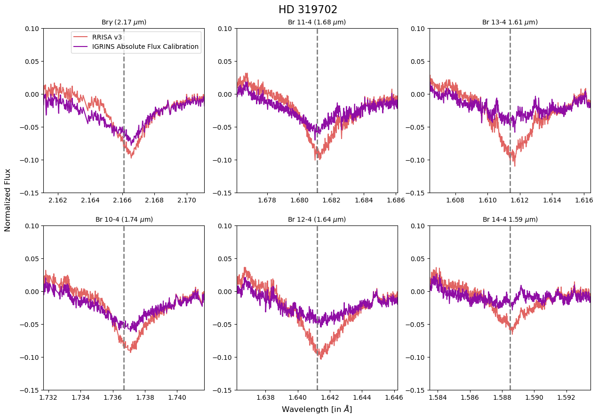
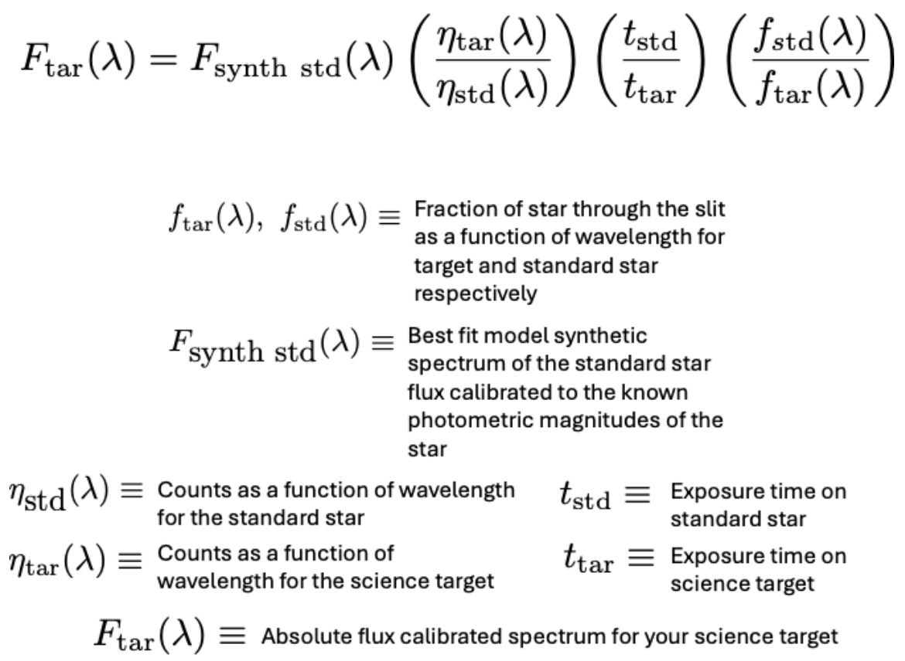

IGRINS PLP Poor Brackett Series Correction
We recommend all RRISA users post-process their data using the IGRINS absolute flux calibration to achieve the best target data reduction, particularly when the science application for the data includes analysis of the Brackett Series features.
The IGRINS PLP does it’s relative flux calibration by assuming the standard star observed for each observation is Vega-like; this output becomes the spec_a0v.fits file that you get from RRISA (e.g. (TGT_SPEC/A0V_SPEC)*VEGA_SPEC). However, this can cause issues when standard stars are not Vega-like (common for observations not at Gemini South), particularly for Br-series lines because the Vega model the IGRINS PLP uses has fixed and narrow width HI line profiles. This under-corrects the true Br-series line profiles of the standard stars, leaving behind residual uncorrected Br-series features in the final target spectrum.

A comparison of some of the Br-series lines with data taken directly from RRISA v3 (orange) and after the IGRINS Absolute Flux Calibration (purple). We can see a significant reduction in the absorption apperance in the lines with the improved standard star modeling from the IGRINS Absolute Flux Calibration.
If your science requires accurate Br-series feature correction, we recommend using the IGRINS Absolute Flux Calibrator. The absolute flux calibration fits an estimate of the fraction of light that passes through the slit for each echelle order to determine the wavelength dependent fraction of light through the slit for both the target and the standard. The best fit model from the PHOENIX stellar atmosphere model grid (Husser et al. (2013)) is used to find the best fit stellar parameters for the standard star (Teff, logg, Z, rotational velocity, and radial velocity). The best fit model is selected based on the best fit to the Br-gamma and Br-14 line features (at 2.16612 um and 1.58849 um). The best fit synthetic model is then scaled to the known V-band magnitude of the standard star to produce the best estimate of the standard star's intrinsic spectrum. The emperical absolute flux calibration and telluric correction of the science target spectrum is then estimated using the following equations:

The output flux from the IGRINS absolute flux calibration is in units of erg s-1 cm-2 um-1. The output file type from the absolute flux calibration is .flux_a0v.fits; users can find more information about the extensions contained in this file here. Finally, the absolute flux calibration also performs synthetic photometry of the science target which can be directly compared with the 2MASS H- and K-band magnitudes.
We have found for non-variable targets, the precision for the absolute flux calibration is within 0.1 to 0.2 magnitudes of the 2MASS H- and K-band magnitudes. Under good conditions, it can estimate within < 0.1 magnitudes. Many science targets observed with IGRINS are variable so this comparison may not always be well matched to the existing magnitudes, but it does provide a good sanity check.
The IGRINS absolute flux calibration cannot correct for flux loss due to poor weather conditions. We recommend users interested in accurate absolute flux for their targets, verify the weather conditions for the observations using the IGRINS obsering logs.
For a more detailed explanation of the absolute flux calibration, check out the IGRINS absolute flux calibration wiki. If you have any futher questions, reach out to the IGRINS Team: igrins.contact [at] gmail.com.